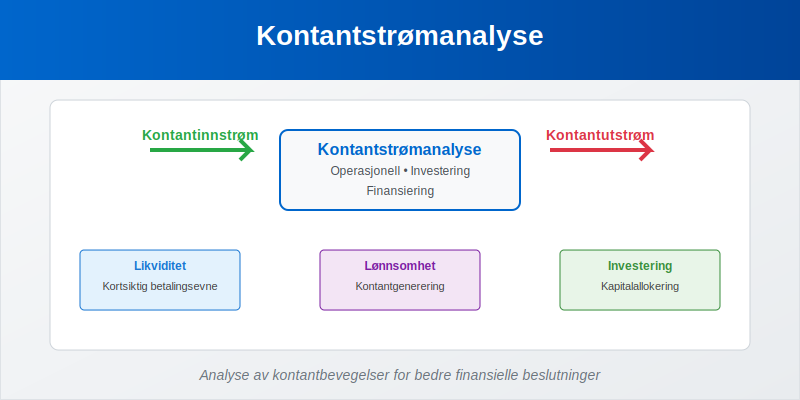
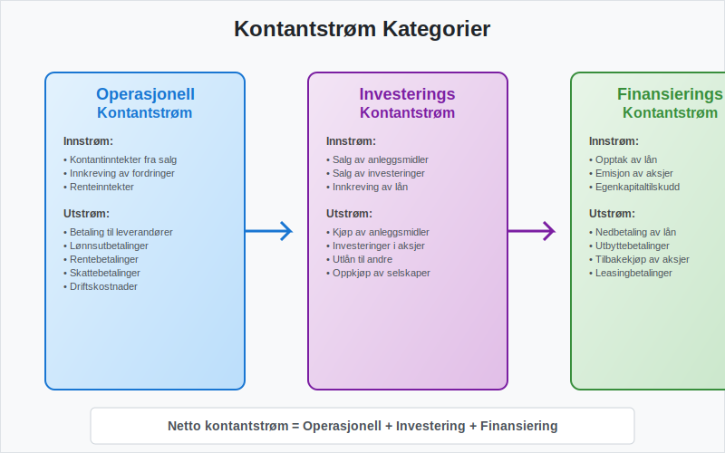
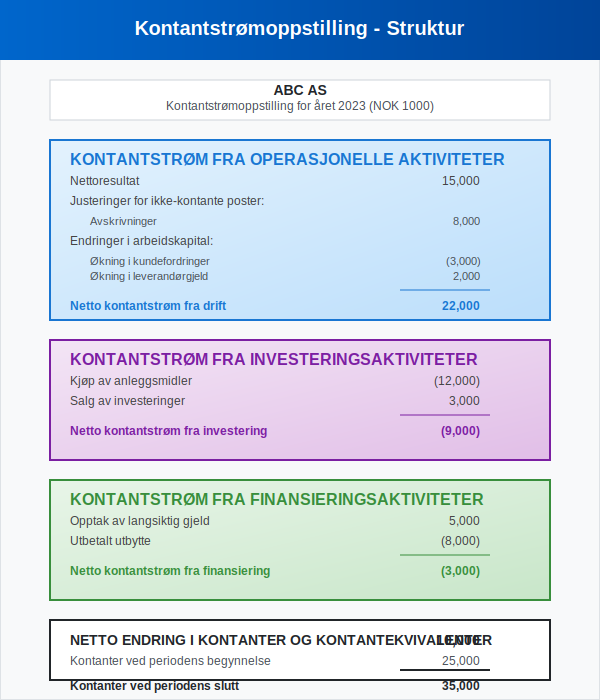
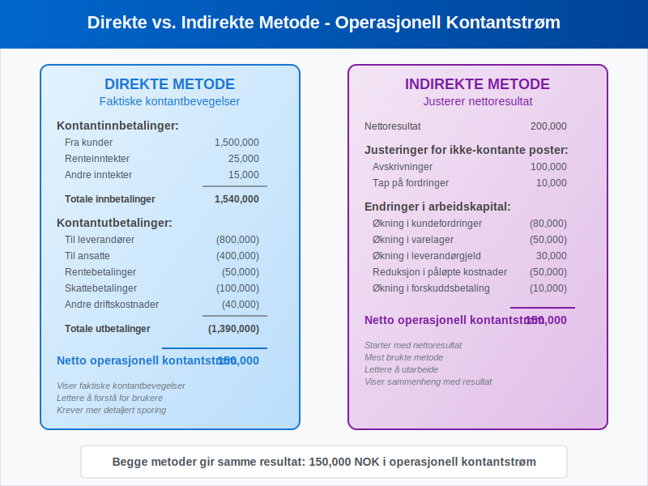
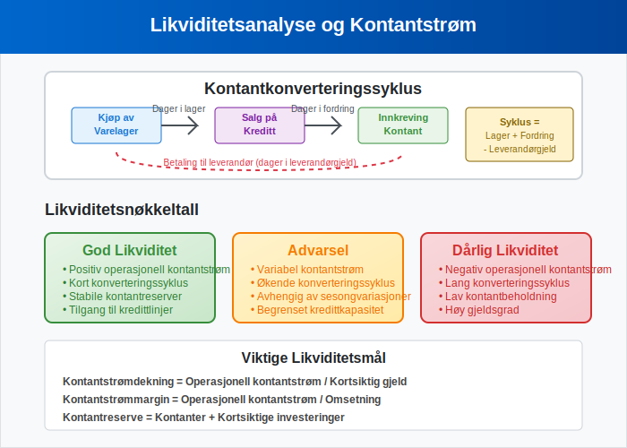
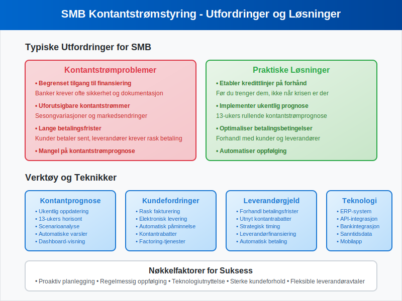
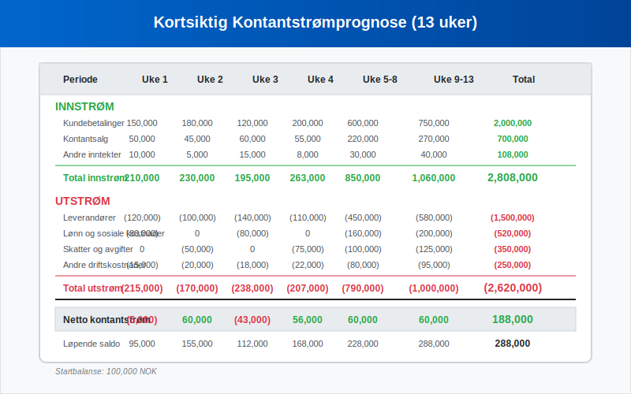
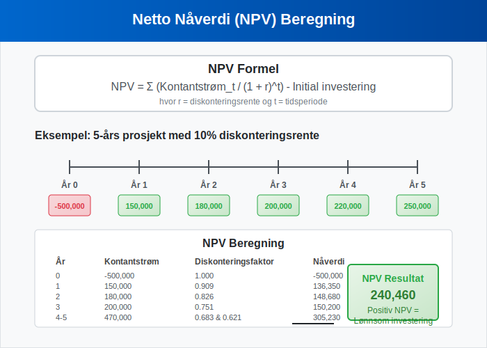
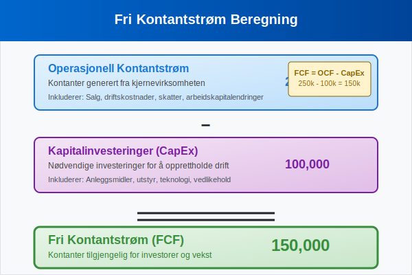

Kontantstrømanalyse er en av de mest kritiske finansielle analyseteknikkene for å forstå en bedrifts reelle økonomiske helse og likviditet. Mens resultatregnskapet viser lønnsomhet, avslører kontantstrømanalysen hvordan kontanter faktisk strømmer inn og ut av virksomheten.
I motsetning til regnskapsmessig resultat, som kan påvirkes av periodiseringer og regnskapsmessige vurderinger, gir kontantstrømanalysen et objektivt bilde av bedriftens evne til å generere kontanter og oppfylle sine finansielle forpliktelser. For å forstå sammenhengen mellom kontantstrøm og andre finansielle rapporter, er det viktig å ha god kjennskap til finansregnskap generelt.

Seksjon 1: Grunnleggende Prinsipper for Kontantstrømanalyse
1.1 Hva er Kontantstrøm?
Kontantstrøm refererer til bevegelsen av kontanter inn og ut av en virksomhet over en bestemt periode. Det skilles mellom tre hovedkategorier av kontantstrøm:
- Operasjonell kontantstrøm: Kontanter generert fra kjernevirksomheten
- Investeringskontantstrøm: Kontanter brukt på eller generert fra investeringer
- Finansieringskontantstrøm: Kontanter fra eller til eiere og kreditorer

1.2 Forskjellen mellom Kontantstrøm og Resultat
En av de viktigste innsiktene i kontantstrømanalyse er å forstå hvorfor kontantstrøm og regnskapsmessig resultat kan være svært forskjellige:
| Aspekt | Regnskapsmessig Resultat | Kontantstrøm |
|---|---|---|
| Periodisering | Følger periodiseringsprinsippet | Kun faktiske kontantbevegelser |
| Avskrivninger | Inkluderer avskrivninger | Ekskluderer ikke-kontante poster |
| Kundefordringer | Inntekt ved salg | Kontant ved betaling |
| Leverandørgjeld | Kostnad ved kjøp | Kontant ved betaling |
| Timing | Når transaksjonen skjer | Når kontantene utveksles |
Seksjon 2: Kontantstrømoppstillingen
2.1 Struktur og Komponenter
Kontantstrømoppstillingen er en av de tre hovedkomponentene i finansregnskapet, sammen med resultatregnskapet og balansen.

Operasjonell Kontantstrøm
Den operasjonelle kontantstrømmen viser hvor mye kontanter virksomheten genererer fra sin kjernevirksomhet. Dette inkluderer:
- Kontantinntekter fra salg av varer og tjenester
- Kontantutbetalinger til leverandører og ansatte
- Rentebetalinger og skattebetalinger
- Endringer i arbeidskapital
Investeringskontantstrøm
Investeringskontantstrømmen reflekterer virksomhetens investeringer i langsiktige eiendeler:
- Kjøp og salg av anleggsmidler
- Investeringer i andre selskaper
- Utlån og innkreving av lån til andre
Finansieringskontantstrøm
Finansieringskontantstrømmen viser hvordan virksomheten finansierer sin drift og vekst:
- Utstedelse og tilbakebetaling av gjeld
- Egenkapitaltilførsel og utbyttebetalinger
- Endringer i egenkapital
2.2 Direkte vs. Indirekte Metode
Det finnes to hovedmetoder for å presentere operasjonell kontantstrøm:

Direkte Metode
Den direkte metoden viser faktiske kontantinnbetalinger og -utbetalinger:
Kontantinnbetalinger fra kunder 1,500,000
Kontantutbetalinger til leverandører (800,000)
Kontantutbetalinger til ansatte (400,000)
Rentebetalinger (50,000)
Skattebetalinger (100,000)
Netto operasjonell kontantstrøm 150,000
Indirekte Metode
Den indirekte metoden starter med nettoresultatet og justerer for ikke-kontante poster:
Nettoresultat 200,000
Avskrivninger 100,000
Økning i kundefordringer (80,000)
Økning i varelager (50,000)
Økning i leverandørgjeld 30,000
Reduksjon i påløpte kostnader (50,000)
Netto operasjonell kontantstrøm 150,000
Seksjon 3: Nøkkeltall og Analyseteknikker
3.1 Viktige Kontantstrømnøkkeltall
Effektiv kontantstrømanalyse krever bruk av relevante nøkkeltall for å vurdere bedriftens finansielle helse:
| Nøkkeltall | Formel | Hva det måler |
|---|---|---|
| Operasjonell kontantstrømmargin | Operasjonell kontantstrøm / Omsetning | Hvor mye kontant hver krone i salg genererer |
| Kontantstrøm per aksje | Operasjonell kontantstrøm / Antall aksjer | Kontantgenerering per aksje |
| Kontantstrømdekning | Operasjonell kontantstrøm / Totale forpliktelser | Evne til å dekke gjeld med kontantstrøm |
| Reinvesteringsrate | Investeringskontantstrøm / Operasjonell kontantstrøm | Hvor mye av kontantstrømmen som reinvesteres |
3.2 Kontantstrømanalyse og Likviditet
Likviditetsanalyse er en kritisk del av kontantstrømanalysen. Den vurderer bedriftens evne til å møte kortsiktige forpliktelser. For systematisk planlegging av likviditet og kontantstrømmer, er likviditetsbudsjett et uunnværlig verktøy som komplementerer kontantstrømanalysen:

Kontantkonverteringssyklus
Kontantkonverteringssyklusen måler hvor lang tid det tar å konvertere investeringer i varelager og kundefordringer tilbake til kontanter:
Kontantkonverteringssyklus =
Dager i varelager +
Dager i kundefordringer -
Dager i leverandørgjeld
- Kortere syklus = Bedre kontantstrøm og likviditet
- Lengre syklus = Mer arbeidskapital bundet opp
3.3 Kvalitativ Kontantstrømanalyse
Utover kvantitative mål, er det viktig å vurdere kvaliteten på kontantstrømmen:
Kjennetegn på Høy Kvalitet Kontantstrøm:
- Konsistent operasjonell kontantstrøm over tid
- Forutsigbar og stabil kontantgenerering
- Lav avhengighet av eksterne finansieringskilder
- Positiv trend i operasjonell kontantstrøm
Advarselstegn:
- Operasjonell kontantstrøm som er lavere enn nettoresultat over tid
- Økende avhengighet av ekstern finansiering
- Volatile eller uforutsigbare kontantstrømmer
- Negativ operasjonell kontantstrøm i flere perioder
Seksjon 4: Praktisk Anvendelse i Norsk Næringsliv
4.1 Sektorspesifikke Betraktninger
Ulike bransjer har forskjellige kontantstrømmønstre som må tas i betraktning:
Detaljhandel
- Sesongvariasjoner i kontantstrøm
- Viktighet av varelager og omløpshastighet
- Kort kontantkonverteringssyklus
Produksjon
- Lengre kontantkonverteringssyklus
- Betydelige investeringer i anleggsmidler
- Viktighet av arbeidskapital-styring
Tjenesteyting
- Lavere investeringsbehov
- Fokus på kundefordringer og faktureringsrutiner
- Betydning av fakturagebyr og betalingsbetingelser
4.2 Kontantstrømanalyse for Små og Mellomstore Bedrifter
For SMB-segmentet er kontantstrømanalyse spesielt kritisk på grunn av:
- Begrenset tilgang til ekstern finansiering
- Høyere sårbarhet for kontantstrømproblemer
- Viktighet av proaktiv kontantstrømstyring

Praktiske Tips for SMB:
- Ukentlig kontantstrømprognose
- Aktiv oppfølging av kundefordringer
- Forhandling av betalingsbetingelser med leverandører
- Etablering av kredittlinjer før de trengs
4.3 Digitalisering og Kontantstrømanalyse
Moderne teknologi har revolusjonert kontantstrømanalyse:
Automatisering og Integrasjon
- ERP-systemer for sanntids kontantstrømdata
- API-integrasjoner mellom bank og regnskapssystem
- Automatisk kategorisering av transaksjoner
Prediktiv Analyse
- Maskinlæring for kontantstrømprognose
- Scenarioanalyse og stresstesting
- Sanntids dashboards og rapportering
Seksjon 5: Kontantstrømprognose og Planlegging
5.1 Kortsiktig Kontantstrømprognose
Kortsiktig prognose (1-13 uker) fokuserer på operasjonelle kontantstrømmer. For systematisk planlegging av kortsiktige kontantstrømmer og likviditetsstyring, er likviditetsbudsjett et essensielt verktøy som gir detaljert oversikt over inn- og utbetalinger:

Komponenter i Kortsiktig Prognose:
- Forventede innbetalinger fra kunder
- Planlagte utbetalinger til leverandører
- Lønnsutbetalinger og andre faste kostnader
- Skatte- og avgiftsbetalinger, inkludert MVA
5.2 Langsiktig Kontantstrømprognose
Langsiktig prognose (1-5 år) inkluderer strategiske investeringer og finansieringsbeslutninger:
Strategiske Elementer:
- Kapitalinvesteringer og ekspansjon
- Finansieringsstruktur og gjeldskapasitet
- Utbyttepolitikk og egenkapitalavkastning
- Scenarioanalyse for ulike markedsforhold
5.3 Kontantstrømstyring og Optimalisering
Effektiv kontantstrømstyring krever proaktive strategier:
Innbetalingsoptimalisering:
- Raskere fakturering og oppfølging
- Insentiver for tidlig betaling
- Factoring av kundefordringer
- Elektronisk fakturering og eFaktura
Utbetalingsoptimalisering:
- Forhandling av betalingsbetingelser
- Strategisk timing av store utbetalinger
- Utnyttelse av leverandørkreditt
- Kontantrabatter vs. betalingsutsettelse
Seksjon 6: Kontantstrømanalyse i Investeringsbeslutninger
6.1 Netto Nåverdi (NPV) og Kontantstrøm
Netto nåverdi er en fundamental metode for å evaluere investeringsprosjekter basert på fremtidige kontantstrømmer:
NPV = Σ (Kontantstrøm_t / (1 + r)^t) - Initial investering
Hvor:
- r = Diskonteringsrente
- t = Tidsperiode

6.2 Internrente (IRR) og Kontantstrømanalyse
Internrenten er diskonteringsrenten som gjør NPV lik null:
- IRR > Avkastningskrav = Lønnsom investering
- IRR < Avkastningskrav = Ulønnsom investering
6.3 Sensitivitetsanalyse
Sensitivitetsanalyse vurderer hvordan endringer i nøkkelvariabler påvirker kontantstrøm:
| Variabel | Optimistisk | Realistisk | Pessimistisk |
|---|---|---|---|
| Omsetningsvekst | +15% | +10% | +5% |
| Marginer | 25% | 20% | 15% |
| Investeringskost | -10% | Budsjett | +20% |
Seksjon 7: Regulatoriske Aspekter og Rapportering
7.1 Norske Regnskapsstandarder
I Norge følger kontantstrømrapportering God regnskapsskikk og internasjonale standarder:
- NRS 7 - Kontantstrømoppstilling
- IAS 7 - Statement of Cash Flows (for IFRS-rapporterende selskaper)
7.2 Krav til Kontantstrømoppstilling
Små Foretak:
- Frivillig kontantstrømoppstilling
- Forenklet presentasjon tillatt
Store Foretak:
- Obligatorisk kontantstrømoppstilling
- Detaljert presentasjon kreves
- Noteopplysninger om kontantstrøm
7.3 Revisorens Rolle
Revisjon av kontantstrømoppstillingen inkluderer:
- Verifisering av kontantbevegelser
- Konsistenssjekk med andre finansielle rapporter
- Vurdering av klassifisering av kontantstrømmer
Seksjon 8: Avanserte Analyseteknikker
8.1 Fri Kontantstrøm (Free Cash Flow)
Fri kontantstrøm måler kontanter tilgjengelig for investorer etter nødvendige investeringer:
Fri kontantstrøm =
Operasjonell kontantstrøm -
Kapitalinvesteringer

8.2 Kontantstrøm til Egenkapital vs. Firma
Kontantstrøm til Egenkapital (FCFE):
FCFE = Fri kontantstrøm - Netto gjeldsendring
Kontantstrøm til Firma (FCFF):
FCFF = EBIT(1-T) + Avskrivninger - Kapitalinvesteringer - Endring i arbeidskapital
8.3 Verdsettelse Basert på Kontantstrøm
Discounted Cash Flow (DCF) modeller bruker fremtidige kontantstrømmer for verdsettelse:
Gordon Growth Model:
Verdi = FCF₁ / (r - g)
Hvor:
- FCF₁ = Neste års fri kontantstrøm
- r = Avkastningskrav
- g = Evig vekstrate
Konklusjon
Kontantstrømanalyse er et uunnværlig verktøy for å forstå en bedrifts reelle finansielle helse og ta informerte forretningsbeslutninger. Ved å kombinere kvantitative analyser med kvalitative vurderinger, kan ledere og investorer få verdifull innsikt i:
- Likviditet og kortsiktig finansiell stabilitet
- Lønnsomhet og operasjonell effektivitet
- Investeringsmuligheter og kapitalallokering
- Finansieringsstrategier og gjeldskapasitet
I dagens digitale økonomi blir kontantstrømanalyse stadig mer sofistikert, med sanntidsdata, prediktive modeller og automatiserte prognoser som gir bedrifter konkurransefortrinn gjennom bedre finansiell styring.
For å opprettholde en sunn kontantstrøm er det essensielt å ha god kontroll over alle aspekter av finansregnskapet, inkludert effektiv arbeidskapital-styring og strategisk planlegging av investeringer og finansiering.